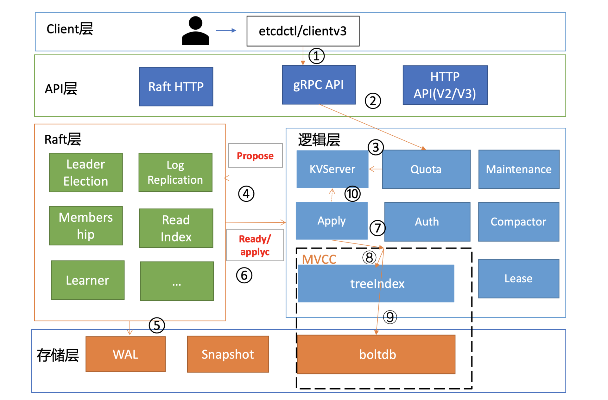

- 00 开篇词 为什么你要学习etcd_.md.html
- 01 etcd的前世今生：为什么Kubernetes使用etcd？.md.html
- 02 基础架构：etcd一个读请求是如何执行的？.md.html
- 03 基础架构：etcd一个写请求是如何执行的？.md.html
- 04 Raft协议：etcd如何实现高可用、数据强一致的？.md.html
- 05 鉴权：如何保护你的数据安全？.md.html
- 06 租约：如何检测你的客户端存活？.md.html
- 07 MVCC：如何实现多版本并发控制？.md.html
- 08 Watch：如何高效获取数据变化通知？.md.html
- 09 事务：如何安全地实现多key操作？.md.html
- 10 boltdb：如何持久化存储你的key-value数据？.md.html
- 11 压缩：如何回收旧版本数据？.md.html
- 12 一致性：为什么基于Raft实现的etcd还会出现数据不一致？.md.html
- 13 db大小：为什么etcd社区建议db大小不超过8G？.md.html
- 14 延时：为什么你的etcd请求会出现超时？.md.html
- 15 内存：为什么你的etcd内存占用那么高？.md.html
- 16 性能及稳定性（上）：如何优化及扩展etcd性能？.md.html
- 17 性能及稳定性（下）：如何优化及扩展etcd性能_.md.html
- 18 实战：如何基于Raft从0到1构建一个支持多存储引擎分布式KV服务？.md.html
- 19 Kubernetes基础应用：创建一个Pod背后etcd发生了什么？.md.html
- 20 Kubernetes高级应用：如何优化业务场景使etcd能支撑上万节点集群？.md.html
- 21 分布式锁：为什么基于etcd实现分布式锁比Redis锁更安全？.md.html
- 22 配置及服务发现：解析etcd在API Gateway开源项目中应用.md.html
- 23 选型：etcd_ZooKeeper_Consul等我们该如何选择？.md.html
- 24 运维：如何构建高可靠的etcd集群运维体系？.md.html
- 特别放送 成员变更：为什么集群看起来正常，移除节点却会失败呢？.md.html
- 结束语 搞懂etcd，掌握通往分布式存储系统之门的钥匙.md.html
- 捐赠
12 一致性：为什么基于Raft实现的etcd还会出现数据不一致？
你好，我是唐聪。
今天我要和你分享的主题是关于etcd数据一致性的。
我们都知道etcd是基于Raft实现的高可用、强一致分布式存储。但是有一天我和小伙伴王超凡却遭遇了一系列诡异的现象：用户在更新Kubernetes集群中的Deployment资源镜像后，无法创建出新Pod，Deployment控制器莫名其妙不工作了。更令人细思极恐的是，部分Node莫名其妙消失了。
我们当时随便找了一个etcd节点查看存储数据，发现Node节点却在。这究竟是怎么一回事呢？ 今天我将和你分享这背后的故事，以及由它带给我们的教训和启发。希望通过这节课，能帮助你搞懂为什么基于Raft实现的etcd有可能出现数据不一致，以及我们应该如何提前规避、预防类似问题。
从消失的Node说起
故事要从去年1月的时候说起，某日晚上我们收到一个求助，有人反馈Kubernetes集群出现了Deployment滚动更新异常、节点莫名其妙消失了等诡异现象。我一听就感觉里面可能大有文章，于是开始定位之旅。
我首先查看了下Kubernetes集群APIServer、Controller Manager、Scheduler等组件状态，发现都是正常。
然后我查看了下etcd集群各节点状态，也都是健康的，看了一个etcd节点数据也是正常，于是我开始怀疑是不是APIServer出现了什么诡异的Bug了。
我尝试重启APIServer，可Node依旧消失。百思不得其解的同时，只能去确认各个etcd节点上数据是否存在，结果却有了颠覆你固定思维的发现，那就是基于Raft实现的强一致存储竟然出现不一致、数据丢失。除了第一个节点含有数据，另外两个节点竟然找不到。那么问题就来了，另外两个节点数据是如何丢失的呢？
一步步解密真相
在进一步深入分析前，我们结合基础篇03对etcd写流程原理的介绍（如下图），先大胆猜测下可能的原因。

猜测1：etcd集群出现分裂，三个节点分裂成两个集群。APIServer配置的后端etcd server地址是三个节点，APIServer并不会检查各节点集群ID是否一致，因此如果分裂，有可能会出现数据“消失”现象。这种故障之前在Kubernetes社区的确也见到过相关issue，一般是变更异常导致的，显著特点是集群ID会不一致。
猜测2：Raft日志同步异常，其他两个节点会不会因为Raft模块存在特殊Bug导致未收取到相关日志条目呢？这种怀疑我们可以通过etcd自带的WAL工具来判断，它可以显示WAL日志中收到的命令（流程四、五、六）。
猜测3：如果日志同步没问题，那有没有可能是Apply模块出现了问题，导致日志条目未被应用到MVCC模块呢（流程七）？
猜测4：若Apply模块执行了相关日志条目到MVCC模块，MVCC模块的treeIndex子模块会不会出现了特殊Bug， 导致更新失败（流程八）？
猜测5：若MVCC模块的treeIndex模块无异常，写请求到了boltdb存储模块，有没有可能boltdb出现了极端异常导致丢数据呢（流程九）？
带着以上怀疑和推测，让我们不断抽丝剥茧、去一步步探寻真相。
首先还是从故障定位第一工具“日志”开始。我们查看etcd节点日志没发现任何异常日志，但是当查看APIServer日志的时候，发现持续报”required revision has been compacted”，这个错误根据我们基础篇11节介绍，我们知道原因一般是APIServer请求etcd版本号被压缩了。
于是我们通过如下命令查看etcd节点详细的状态信息：
etcdctl endpoint status --cluster -w json | python -m
json.tool
获得以下结果：
[
{
"Endpoint":"A"，
"Status":{
"header":{
"cluster_id":17237436991929493444，
"member_id":9372538179322589801，
"raft_term":10，
"revision":1052950
}，
"leader":9372538179322589801，
"raftAppliedIndex":1098420，
"raftIndex":1098430，
"raftTerm":10，
"version":"3.3.17"
}
}，
{
"Endpoint":"B"，
"Status":{
"header":{
"cluster_id":17237436991929493444，
"member_id":10501334649042878790，
"raft_term":10，
"revision":1025860
}，
"leader":9372538179322589801，
"raftAppliedIndex":1098418，
"raftIndex":1098428，
"raftTerm":10，
"version":"3.3.17"
}
}，
{
"Endpoint":"C"，
"Status":{
"header":{
"cluster_id":17237436991929493444，
"member_id":18249187646912138824，
"raft_term":10，
"revision":1028860
}，
"leader":9372538179322589801，
"raftAppliedIndex":1098408，
"raftIndex":1098428，
"raftTerm":10，
"version":"3.3.17"
}
}
]
从结果看，我们获得了如下信息：
第一，集群未分裂，3个节点A、B、C cluster_id都一致，集群分裂的猜测被排除。
第二，初步判断集群Raft日志条目同步正常，raftIndex表示Raft日志索引号，raftAppliedIndex表示当前状态机应用的日志索引号。这两个核心字段显示三个节点相差很小，考虑到正在写入，未偏离正常范围，Raft同步Bug导致数据丢失也大概率可以排除（不过最好还是用WAL工具验证下现在日志条目同步和写入WAL是否正常）。
第三，观察三个节点的revision值，相互之间最大差距接近30000，明显偏离标准值。在07中我给你深入介绍了revision的含义，它是etcd逻辑时钟，每次写入，就会全局递增。为什么三个节点之间差异如此之大呢？
接下来我们就一步步验证猜测、解密真相，猜测1集群分裂说被排除后，猜测2Raft日志同步异常也初步被我们排除了，那如何真正确认Raft日志同步正常呢？
你可以使用下面这个方法验证Raft日志条目同步是否正常。
首先我们写入一个值，比如put hello为world，然后马上在各个节点上用WAL工具etcd-dump-logs搜索hello。如下所示，各个节点上都可找到我们刚刚写入的命令。
$ etcdctl put hello world
OK
$ ./bin/tools/etcd-dump-logs ./Node1.etcd/ | grep hello
10 70 norm header:<ID:3632562852862290438 > put:<key:"hello" value:"world" >
$ ./bin/tools/etcd-dump-logs ./Node2.etcd/ | grep hello
10 70 norm header:<ID:3632562852862290438 > put:<key:"hello" value:"world" >
$ ./bin/tools/etcd-dump-logs ./Node3.etcd/ | grep hello
10 70 norm header:<ID:3632562852862290438 > put:<key:"hello" value:"world" >
Raft日志同步异常猜测被排除后，我们再看下会不会是Apply模块出现了问题。但是raftAppliedIndex却显示三个节点几乎无差异，那我们能不能通过这个指标来判断Apply流程是否正常呢？
源码面前了无秘密，etcd更新raftAppliedIndex核心代码如下所示，你会发现这个指标其实并不靠谱。Apply流程出现逻辑错误时，并没重试机制。etcd无论Apply流程是成功还是失败，都会更新raftAppliedIndex值。也就是一个请求在Apply或MVCC模块即便执行失败了，都依然会更新raftAppliedIndex。
// ApplyEntryNormal apples an EntryNormal type Raftpb request to the EtcdServer
func （s *EtcdServer） ApplyEntryNormal（e *Raftpb.Entry） {
shouldApplyV3 := false
if e.Index > s.consistIndex.ConsistentIndex（） {
// set the consistent index of current executing entry
s.consistIndex.setConsistentIndex（e.Index）
shouldApplyV3 = true
}
defer s.setAppliedIndex（e.Index）
....
}
而三个节点revision差异偏离标准值，恰好又说明异常etcd节点可能未成功应用日志条目到MVCC模块。我们也可以通过查看MVCC的相关metrics（比如etcd_mvcc_put_total），来排除请求是否到了MVCC模块，事实是丢数据节点的metrics指标值的确远远落后正常节点。
于是我们将真凶锁定在Apply流程上。我们对Apply流程在未向MVCC模块提交请求前可能提前返回的地方，都加了日志。
同时我们查看Apply流程还发现，Apply失败的时候并不会打印任何日志。这也解释了为什么出现了数据不一致严重错误，但三个etcd节点却并没有任何异常日志。为了方便定位问题，我们因此增加了Apply错误日志。
同时我们测试发现，写入是否成功还跟client连接的节点有关，连接不同节点会出现不同的写入结果。我们用debug版本替换后，马上就输出了一条错误日志auth: revision in header is old。
原来数据不一致是因为鉴权版本号不一致导致的，节点在Apply流程的时候，会判断Raft日志条目中的请求鉴权版本号是否小于当前鉴权版本号，如果小于就拒绝写入。
那为什么各个节点的鉴权版本号会出现不一致呢？那就需要从可能修改鉴权版本号的源头分析。我们发现只有鉴权相关接口才会修改它，同时各个节点鉴权版本号之间差异已经固定不再增加，要成功解决就得再次复现。
然后还了解到，当时etcd进程有过重启，我们怀疑会不会重启触发了什么Bug，手动尝试复现一直失败。然而我们并未放弃，随后我们基于混沌工程，不断模拟真实业务场景、访问鉴权接口、注入故障（停止etcd进程等），最终功夫不负有心人，实现复现成功。
真相终于浮出水面，原来当你无意间重启etcd的时候，如果最后一条命令是鉴权相关的，它并不会持久化consistent index（KV接口会持久化）。consistent index在03里我们详细介绍了，它具有幂等作用，可防止命令重复执行。consistent index的未持久化最终导致鉴权命令重复执行。
恰好鉴权模块的RoleGrantPermission接口未实现幂等，重复执行会修改鉴权版本号。一连串的Bug最终导致鉴权号出现不一致，随后又放大成MVCC模块的key-value数据不一致，导致严重的数据毁坏。
这个Bug影响etcd v3所有版本长达3年之久。查清楚问题后，我们也给社区提交了解决方案，合并到master后，同时cherry-pick到etcd 3.3和3.4稳定版本中。etcd v3.3.21和v3.4.8后的版本已经修复此Bug。
为什么会不一致
详细了解完这个案例的不一致后，我们再从本质上深入分析下为什么会出现不一致，以及还有哪些场景会导致类似问题呢？
首先我们知道，etcd各个节点数据一致性基于Raft算法的日志复制实现的，etcd是个基于复制状态机实现的分布式系统。下图是分布式复制状态机原理架构，核心由3个组件组成，一致性模块、日志、状态机，其工作流程如下：
- client发起一个写请求（set x = 3）；
- server向一致性模块（假设是Raft）提交请求，一致性模块生成一个写提案日志条目。若server是Leader，把日志条目广播给其他节点，并持久化日志条目到WAL中；
- 当一半以上节点持久化日志条目后，Leader的一致性模块将此日志条目标记为已提交（committed），并通知其他节点提交；
- server从一致性模块获取已经提交的日志条目，异步应用到状态机持久化存储中（boltdb等），然后返回给client。

从图中我们可以了解到，在基于复制状态机实现的分布式存储系统中，Raft等一致性算法它只能确保各个节点的日志一致性，也就是图中的流程二。
而对于流程三来说，server从日志里面获取已提交的日志条目，将其应用到状态机的过程，跟Raft算法本身无关，属于server本身的数据存储逻辑。
也就是说有可能存在server应用日志条目到状态机失败，进而导致各个节点出现数据不一致。但是这个不一致并非Raft模块导致的，它已超过Raft模块的功能界限。
比如在上面Node莫名其妙消失的案例中，就是应用日志条目到状态机流程中，出现逻辑错误，导致key-value数据未能持久化存储到boltdb。
这种逻辑错误即便重试也无法解决，目前社区也没有彻底的根治方案，只能根据具体案例进行针对性的修复。同时我给社区增加了Apply日志条目失败的警告日志。
其他典型不一致Bug
还有哪些场景可能还会导致Apply流程失败呢？我再以一个之前升级etcd 3.2集群到3.3集群时，遇到的数据不一致的故障事件为例给你讲讲。
这个故障对外的表现也是令人摸不着头脑，有服务不调度的、有service下的endpoint不更新的。最终我经过一番排查发现，原来数据不一致是由于etcd 3.2和3.3版本Lease模块的Revoke Lease行为不一致造成。
etcd 3.2版本的RevokeLease接口不需要鉴权，而etcd 3.3 RevokeLease接口增加了鉴权，因此当你升级etcd集群的时候，如果etcd 3.3版本收到了来自3.2版本的RevokeLease接口，就会导致因为没权限出现Apply失败，进而导致数据不一致，引发各种诡异现象。
除了重启etcd、升级etcd可能会导致数据不一致，defrag操作也可能会导致不一致。
对一个defrag碎片整理来说，它是如何触发数据不一致的呢？ 触发的条件是defrag未正常结束时会生成db.tmp临时文件。这个文件可能包含部分上一次defrag写入的部分key/value数据，。而etcd下次defrag时并不会清理它，复用后就可能会出现各种异常场景，如重启后key增多、删除的用户数据key再次出现、删除user/role再次出现等。
etcd 3.2.29、etcd 3.3.19、etcd 3.4.4后的版本都已经修复这个Bug。我建议你根据自己实际情况进行升级，否则踩坑后，数据不一致的修复工作是非常棘手的，风险度极高。
从以上三个案例里，我们可以看到，算法一致性不代表一个庞大的分布式系统工程实现中一定能保障一致性，工程实现上充满着各种挑战，从不可靠的网络环境到时钟、再到人为错误、各模块间的复杂交互等，几乎没有一个存储系统能保证任意分支逻辑能被测试用例100%覆盖。
复制状态机在给我们带来数据同步的便利基础上，也给我们上层逻辑开发提出了高要求。也就是说任何接口逻辑变更etcd需要保证兼容性，否则就很容易出现Apply流程失败，导致数据不一致。
同时除了Apply流程可能导致数据不一致外，我们从defrag案例中也看到了一些维护变更操作，直接针对底层存储模块boltdb的，也可能会触发Bug，导致数据不一致。
最佳实践
在了解了etcd数据不一致的风险和原因后，我们在实践中有哪些方法可以提前发现和规避不一致问题呢？
下面我为你总结了几个最佳实践，它们分别是：
- 开启etcd的数据毁坏检测功能；
- 应用层的数据一致性检测；
- 定时数据备份；
- 良好的运维规范（比如使用较新稳定版本、确保版本一致性、灰度变更）。
开启etcd的数据毁坏检测功能
首先和你介绍下etcd的数据毁坏检测功能。etcd不仅支持在启动的时候，通过–experimental-initial-corrupt-check参数检查各个节点数据是否一致，也支持在运行过程通过指定–experimental-corrupt-check-time参数每隔一定时间检查数据一致性。
那么它的一致性检测原理是怎样的？如果出现不一致性，etcd会采取什么样动作去降低数据不一致影响面呢？
其实我们无非就是想确定boltdb文件里面的内容跟其他节点内容是否一致。因此我们可以枚举所有key value，然后比较即可。
etcd的实现也就是通过遍历treeIndex模块中的所有key获取到版本号，然后再根据版本号从boltdb里面获取key的value，使用crc32 hash算法，将bucket name、key、value组合起来计算它的hash值。
如果你开启了–experimental-initial-corrupt-check，启动的时候每个节点都会去获取peer节点的boltdb hash值，然后相互对比，如果不相等就会无法启动。
而定时检测是指Leader节点获取它当前最新的版本号，并通过Raft模块的ReadIndex机制确认Leader身份。当确认完成后，获取各个节点的revision和boltdb hash值，若出现Follower节点的revision大于Leader等异常情况时，就可以认为不一致，发送corrupt告警，触发集群corruption保护，拒绝读写。
从etcd上面的一致性检测方案我们可以了解到，目前采用的方案是比较简单、暴力的。因此可能随着数据规模增大，出现检测耗时增大等扩展性问题。而DynamoDB等使用了merkle tree来实现增量hash检测，这也是etcd未来可能优化的一个方向。
最后你需要特别注意的是，etcd数据毁坏检测的功能目前还是一个试验(experimental)特性，在比较新的版本才趋于稳定、成熟（推荐v3.4.9以上），预计在未来的etcd 3.5版本中才会变成稳定特性，因此etcd 3.2⁄3.3系列版本就不能使用此方案。
应用层的数据一致性检测
那要如何给etcd 3.2⁄3.3版本增加一致性检测呢? 其实除了etcd自带数据毁坏检测，我们还可以通过在应用层通过一系列方法来检测数据一致性，它们适用于etcd所有版本。
接下来我给你讲讲应用层检测的原理。
从上面我们对数据不一致性案例的分析中，我们知道数据不一致在MVCC、boltdb会出现很多种情况，比如说key数量不一致、etcd逻辑时钟版本号不一致、MVCC模块收到的put操作metrics指标值不一致等等。因此我们的应用层检测方法就是基于它们的差异进行巡检。
首先针对key数量不一致的情况，我们可以实现巡检功能，定时去统计各个节点的key数，这样可以快速地发现数据不一致，从而及时介入，控制数据不一致影响，降低风险。
在你统计节点key数时，记得查询的时候带上WithCountOnly参数。etcd从treeIndex模块获取到key数后就及时返回了，无需访问boltdb模块。如果你的数据量非常大（涉及到百万级别），那即便是从treeIndex模块返回也会有一定的内存开销，因为它会把key追加到一个数组里面返回。
而在WithCountOnly场景中，我们只需要统计key数即可。因此我给社区提了优化方案，目前已经合并到master分支。对百万级别的key来说，WithCountOnly时内存开销从数G到几乎零开销，性能也提升数十倍。
其次我们可以基于endpoint各个节点的revision信息做一致性监控。一般情况下，各个节点的差异是极小的。
最后我们还可以基于etcd MVCC的metrics指标来监控。比如上面提到的mvcc_put_total，理论上每个节点这些MVCC指标是一致的，不会出现偏离太多。
定时数据备份
etcd数据不一致的修复工作极其棘手。发生数据不一致后，各个节点可能都包含部分最新数据和脏数据。如果最终我们无法修复，那就只能使用备份数据来恢复了。
因此备份特别重要，备份可以保障我们在极端场景下，能有保底的机制去恢复业务。请记住，在做任何重要变更前一定先备份数据，以及在生产环境中建议增加定期的数据备份机制（比如每隔30分钟备份一次数据）。
你可以使用开源的etcd-operator中的backup-operator去实现定时数据备份，它可以将etcd快照保存在各个公有云的对象存储服务里面。
良好的运维规范
最后我给你介绍几个运维规范，这些规范可以帮助我们尽量少踩坑（即便你踩坑后也可以控制故障影响面）。
首先是确保集群中各节点etcd版本一致。若各个节点的版本不一致，因各版本逻辑存在差异性，这就会增大触发不一致Bug的概率。比如我们前面提到的升级版本触发的不一致Bug就属于此类问题。
其次是优先使用较新稳定版本的etcd。像上面我们提到的3个不一致Bug，在最新的etcd版本中都得到了修复。你可以根据自己情况进行升级，以避免下次踩坑。同时你可根据实际业务场景以及安全风险，来评估是否有必要开启鉴权，开启鉴权后涉及的逻辑更复杂，有可能增大触发数据不一致Bug的概率。
最后是你在升级etcd版本的时候，需要多查看change log，评估是否存在可能有不兼容的特性。在你升级集群的时候注意先在测试环境多验证，生产环境务必先灰度、再全量。
小结
最后，我来总结下我们今天的内容。
我从消失的Node案例为例，介绍了etcd中定位一个复杂不一致问题的思路和方法工具。核心就是根据我们对etcd读写原理的了解，对每个模块可能出现的问题进行大胆猜想。
同时我们要善于借助日志、metrics、etcd tool等进行验证排除。定位到最终模块问题后，如果很难复现，我们可以借助混沌工程等技术注入模拟各类故障。遇到复杂Bug时，请永远不要轻言放弃，它一定是一个让你快速成长的机会。
其次我介绍了etcd数据不一致的核心原因：Raft算法只能保证各个节点日志同步的一致性，但Apply流程是异步的，它从一致性模块获取日志命令，应用到状态机的准确性取决于业务逻辑，这块是没有机制保证的。
同时，defrag等运维管理操作，会直接修改底层存储数据，异常场景处理不严谨也会导致数据不一致。
数据不一致的风险是非常大的，轻则业务逻辑异常，重则核心数据丢失。我们需要机制去提前发现和规避它，因此最后我详细给你总结了etcd本身和应用层的一致性监控、定时备份数据、良好的运维规范等若干最佳实践，这些都是宝贵的实践总结，希望你能有所收获。
思考题
掌握好最佳实践、多了解几个已知Bug，能让你少交很多昂贵的学费，针对数据不一致问题，你是否还有更好的建议呢？ 同时，你在使用etcd过程中是否还有其他令你记忆深刻的问题和Bug呢？欢迎你在留言区与我讨论。
感谢你的阅读，如果你认为这节课的内容有收获，也欢迎把它分享给你的朋友，我们下一讲见。
© 2019 - 2023 Liangliang Lee. Powered by gin and hexo-theme-book.